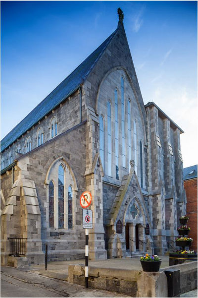

The Augustinian Church
Augustinian friars first came to Drogheda in 1295, occupying a "convent" on the site where the present church is built. This church, which is a graceful Gothic building was built in the 1860s. Looking at the exterior of the church one notices the absence of a tower or spire but also that 3 buttresses were built to the right hand side of the church to support a tower, but, with the foundations being built "on a turfy substance" they could not support the extra weight. The striking stained glass windows over the front entrance and behind the altar are ‘seven light' windows, i.e. divided by vertical stone divisions into seven individual openings. Various historians have attributed these to the famous stained glass artist Harry Clarke or his studios. The ‘three light' window to the left of the entrance is by Harry Clarke. The interior of the church has arcades of pointed arches between the nave and the aisles and a tall pointed arch divides the nave from the sanctuary. It is dark and impressive.